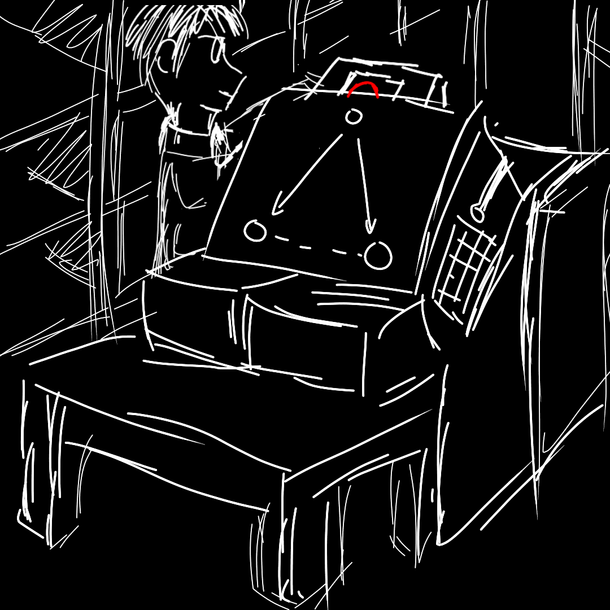

"Max, you might want to take a look at this as well."
You follow Stephen into another room. He removed a package from the shelf. It has the following label:
After that, he puts the package inside a gigantic machine, and he activates the machine. After a bunch of clanks and shaking, the machine stops running, and from its output, you saw two packages popping out from the bottom.
You inspect the labels of the packages. This time, the label looks pretty different: Instead of only a single box, there are two boxes on each of the label.

Stephen repeats the process for 15 more packages, creating a total of 16 pairs of packages. Like before, he arranges them on the table,
|
◯
?
|
You inspect the packages. It seems that each pair of package will always have the same colour. Both balls are either red, or blue.
"Hmm, what does the machine do to the balls?" You ask Stephen.
"The machine splits the quantum ball inside in half, and constuct two balls from the splitted part," he replied. "What's interesting is that, the states of the two balls are always synchronised. They are either both red, or both blue."
"Even though we cannot predict the exact state of the balls before opening the packages, we know that there are some business going on between the two balls.It is as if the two balls are ENTANLGED together, sharing a common fate."
"If we inspect only one of the packages, we may not realise that these two packages are somehow ENTANLGED. Only by looking them together as whole, would we have the full picture of their relationship."
"This is the charm of quantum entanglement: you cannot describe the state an entangled objects without involving the state of the other objects."
You nod your hand and write something down on your memo.